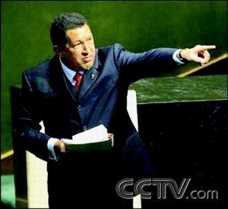

鲜为人知：毛泽东十大超级“粉丝”(组图)
东塔先生对本文第79条和第80条评论的回复：
对于某些拿毛主席同希特勒来比较的人，我十分的厌恶，他们的理由无非是说毛泽东搞个人崇拜，有很多崇拜者，同希特勒一样有很多崇拜者，我反问句，华盛顿不也有很多崇拜者，林肯也不有很多崇拜者，难道他们搞个人崇拜？他们是邪魔？我问一句，你所崇拜的偶像，是人家所强迫来的吗？答案是否定的，每个人的信仰和崇拜，都是自觉而然的，是对被崇拜者的魅力所感召，我们应当承认希特勒也有一定的人格魅力，例如他的执着。当然，毛泽东同希特勒的性质不一样，毛是革命者，是救国者，是把侵略者从中国赶出去，而希是侵略者，种族主义者。所以，对于那些想把概念混淆，以此来诋毁毛主席的人，都是在误倒人民群众。当然，我们也要承认，毛泽东的确犯了很多错误，但这并非主观本意上的，而是客观的，而且这些错误，应当理解为政策上的失误。另外说一点，很多人认为把毛泽东神化，这是在愚弄民众。要知道一个国家，一个民族，一个社会，必须要有一个强大的精神领袖，那么毛泽东就是这样一个人，如同基督教中的耶稣，佛教派的释迦牟尼，伊斯兰教的穆罕默德。正是因为有了这些精神领袖，这些国家，民族，宗教，才能依然保持强大，保持团结。没有精神领袖的任何国家，民族，组织，都是不可能强大的。精神领袖，就如同向心力，把大家都团结凝聚在一起。更何况，毛泽东的确有这么大人格魅力，值得我们崇拜。不再废话，就说这么多。
关于对英雄崇拜的文章，我推荐一篇《论英雄崇拜》。
http://cimg2.163.com/catchpic/3/36/36D44BB610E35F8B4909F95FAF8E8892.jpg
毛泽东第一次出现在西方视野是一本叫《生活》的画报，这本画报是那个年代美国文化的标志之一，由此，毛泽东和他的金光闪闪的红五星开始在纽约、进而在整个美国闪耀，后来蔓延到欧洲、南美等世界各地。而在上世纪60、70年代，毛泽东对西方社会产生的影响也是非常巨大的。
http://cimg2.163.com/catchpic/F/FB/FBF5A40DB8300004166976BC61BFB657.jpg
在美国、欧洲，毛泽东的肖像出现在报刊头版上、出现在街头的队伍中。从作家让·热内，到后现代哲学家福柯以及上海举行演唱会的“滚石乐队”的摇滚乐手都曾是毛泽东的忠实追随者。英国的甲壳虫乐队(TheBeatles)的约翰·列农也在歌词里提到过毛泽东，当年横跨欧美的嬉皮浪潮中，毛泽东曾是他们的精神图腾。
http://cimg2.163.com/catchpic/1/18/182B17B4C75075F798DA9CDEDECCBAC3.jpg
在二十世纪的世界政治舞台上，没有哪一位政治领袖像毛那样受到全世界的一致推崇，也许并不喜欢。一些西方学者就毛泽东的贡献进行了非常深入的研究，给予的评价之高超越受益最大的中华民族的学者们所给予的赞誉。
http://cimg2.163.com/catchpic/4/4A/4AD2281383F1AA4C2756DCB0C9562138.jpg
他逝后，留给中国乃至世界的是一波波毛泽东热潮，毛泽东影响的人，数以几十亿计。崇拜毛的人就是除以1万也比很多明星多！！
http://cimg2.163.com/catchpic/0/0B/0B9E7390116EC46B1430DEF1E5AEF3C8.jpg
1.加拿大医生白求恩
http://cimg2.163.com/catchpic/E/ED/ED8F56AC90F3EF66DAF019CE25718DB4.jpg
上榜的理由：他为这个英雄的国家牺牲了生命！
http://cimg2.163.com/catchpic/2/22/22DB1E81E922C5A8040EA9CDC31BD20E.jpg
http://cimg2.163.com/catchpic/6/6D/6D48CD7F1EC04B15CBDC461D4D93ED64.jpg
评价毛泽东：“这是一位盖世英才。他一定会改变这个世界。”
http://cimg2.163.com/catchpic/A/A9/A95CDBD5C7228F6A0130476DCC88E352.jpg
2.拳手经纪人唐.金＋拳王泰森
http://cimg2.163.com/catchpic/7/7E/7E6ADA378C8D0484C5161C3C14CAEA0D.jpg
http://cimg2.163.com/catchpic/9/90/90E0B1BD59DAB72C282E2343077F49C6.jpg
上榜的理由：唐.金会背诵毛主席语录！泰森臂膀上纹有毛泽东的图像。
http://cimg2.163.com/catchpic/8/83/834F9FC24C3BA14489BA9A3380DC52F7.jpg
评价毛泽东：“毛主席虽然已经离开我们，但他仍然活在我们心中。他毕生所做的一切，所代表的一切都是为了中国人民，我非常荣幸能瞻仰这位伟大的领袖。”
http://cimg2.163.com/catchpic/7/75/7590EB9186D195E314F7D4397D2C0294.jpg
上榜的理由：唐.金会背诵毛主席语录！泰森臂膀上纹有毛泽东的图像。 3.巴基斯坦前总理本·布托
http://cimg2.163.com/catchpic/6/67/674855FE5D43E3DA643EFC19CA2FFB9C.jpg
上榜的理由：情真意切，评价最高：也许一千年里只能产生一位！
评价毛泽东：像毛泽东那样的人物，在一个世纪，也许一千年里只能产生一位，他们占领了舞台，以天才的灵感写下了历史的篇章。毫无疑问，毛泽东是巨人中的巨人。他使历史显得渺小。他的强有力的影响在全世界亿万男女的心中留下了印记。毛泽东是革命的儿子，是革命的精髓，确实是革命的旋律和传奇，是震动世界的出色的新秩序的最高缔造者。毛泽东没有死，他永垂不朽。他的思想将继续指导各国人民和各民族的命运，一直到太阳永远不再升起。如果仅仅是从中国的范围来衡量他的划时代的功绩，那将有损于对这位非凡人物的纪念。当然，他为中国及其八亿人民做了了不起的事情，但是毛泽东也是一位崇高的世界领袖。他对当代局势发展的贡献是没有人可以比拟的。今天，全世界都哀悼毛泽东的逝世，但是到明天黎明，都将起来歌唱颂扬他不朽的赞歌。我的思想和感情，像我的同胞一样，极为悲恸沉痛。这位人物的谦虚和幽默，他的光荣和伟大，他的英勇和胜利，将永垂青史。毛泽东的名字将永远是穷人和被压迫者的伟大而正义的事业的同义语，是人类反对压迫和剥削的斗争的光辉象征，是对殖民主义和帝国主义的胜利的标志——“是幻觉还是梦境？日出雾散，是梦还是醒？”我们巴基斯坦将永远怀着敬意纪念不朽的毛泽东。”
4.美国重量级政治家基辛格
http://cimg2.163.com/catchpic/9/9A/9A5BF8F3C6901ADA2DEF2E1D89CB5FE7.jpg
上榜的理由：见毛泽东时有被‘电’的感觉就已非同一般了！
http://cimg2.163.com/catchpic/B/BD/BD40FCC81423D312B051F70CC2970599.jpg
http://cimg2.163.com/catchpic/8/8E/8EAB0D0C48F2A67056F931344AC2B981.jpg
评价毛泽东：“女儿形容她崇拜的歌星能带来电磁般的冲击，我承认我没这种感觉；但在毛泽东面前，他确实给了我这种感受”。
http://cimg2.163.com/catchpic/0/02/027BF1B329187118C952D90AF00865FB.jpg
5.西德南特威希博士
http://cimg2.163.com/catchpic/9/93/9383609BF1D13C830404CB847FBEA090.jpg
上榜的理由：为毛泽东的逝世伤心流泪的铁杆‘粉丝’！
http://cimg2.163.com/catchpic/9/9F/9FBD92C3D3ACF59E76C6D1C2E4831097.jpg
评价毛泽东：我从十五六岁开始就对毛泽东感兴趣。我记得很清楚，当听到毛泽东逝世的消息的时候，我流下了眼泪。第二天第一堂课刚好是历史课，大家停止上课，悼念毛主席。我当时致了悼词。当年联邦德国(西德)的许多年轻人受到毛泽东思想的影响。
6.美国中国问题专家R·特里尔
http://cimg2.163.com/catchpic/0/08/0840ED64F17F95C78E6082E713827639.jpg
上榜的理由：他奇迹般地创造了一个不等式：毛泽东>马克思＋列宁＋斯大林
http://cimg2.163.com/catchpic/6/6C/6CF0605CB10780E076D482CB0B7C353F.jpg
评价毛泽东：毛是20世纪的魅力超群的政治家。……他的经历，足以使他成为马克思、列宁、斯大林合为一体的中国革命的化身。
7.美国学者莫里斯·迈斯纳
http://cimg2.163.com/catchpic/3/3B/3BE41A2E6100E63342B6B8D2A226FE07.jpg
上榜的理由：是对现在一些人说毛经济为零分的极有说服力的批评！
http://cimg2.163.com/catchpic/C/CE/CE560294529A2EF11BF077BC2883A3E5.jpg
评价毛泽东：其实毛泽东的那个时代远非是现在普遍传闻中所谓的经济停滞时代。而是世界历史上最伟大的现代化时代，与德国、日本和俄国等几个现代工业舞台上的主要的后起之秀的工业化过程中最剧烈时期相比毫不逊色。在毛泽东身后的时代里，对毛泽东时代的历史记录的污点吹毛求疵，而缄口不提当时的成就已然成为一种风尚——深恐提及便会被视为对毛泽东时代的辩护。然而，对一个基本事实的承认，即毛泽东时代在促进中国现代工业改造——而且是在极为不利的国际国内条件下做的——过程中取得了巨大的成就，并不就等于是为历史作非分的辩护。如果没有毛泽东时代发生的工业革命，80年代将找不到要改革的对象......几乎像毛泽东本人支配着他那个时代的政治生活和社会生活一样，毛泽东的幽灵也还支配着新时代的政治意识。
8.美国作家史沫特莱
http://cimg2.163.com/catchpic/8/8F/8F72CF3EE7CFC87FA551C6BF78ECB20D.jpg
上榜的理由：以金庸写武侠人物一样的烘托手法，显示非同凡响的效果！
上榜的理由：以金庸写武侠人物一样的烘托手法，显示非同凡响的效果！
http://cimg2.163.com/catchpic/1/17/17E42F418736BCE2BB429775DD1F443B.jpg
评价毛泽东：中国共产党的其他领袖人物，每一个都可以同古今中外社会历史上的人物相提并论，但无人能够比得上毛泽东。
http://cimg2.163.com/catchpic/7/74/74F921B8225CB389AD726411DF276C01.jpg
9.美国前国防部长助理菲利普.戴维逊
上榜的理由：非常豪迈的评价：战无不胜！
评价毛泽东：“毛泽东是一位伟大的战略家。哪个领袖能像他这样在这么多不同类型的冲突中长期立于不败之地？”
10.委内瑞拉总统查韦斯
http://cimg2.163.com/catchpic/E/E9/E92B1BEA6AA46851C5B08B19FDB00C6A.jpg
上榜的理由：乌戈.查韦斯这个名字，在国际上日益响亮，他不畏惧美国的威胁，他决心改革，建设另一种特色的社会主义。
http://cimg2.163.com/catchpic/8/81/81788584121FE0CC31230979091186EA.jpg
“伟大的舵手毛泽东”、“在战略上要藐视敌人”……对这些话语,查韦斯像很多中国人一样,经常会脱口而出。更令人惊奇的是,他甚至能说出毛主席某段语录出自《毛泽东选集》的第几卷。这一点,恐怕不少中国人都比不上他。
上榜的理由：乌戈.查韦斯这个名字，在国际上日益响亮，他不畏惧美国的威胁，他决心改革，建设另一种特色的社会主义。
http://cimg2.163.com/catchpic/D/D2/D2B45A6032108FCB29609356C4D04C8C.jpg
评价毛泽东：“我整个一生都是毛泽东的崇拜者。”

http://cimg2.163.com/catchpic/7/79/79DC36E71455C4BEC1679E255BD63EA9.jpg
评价毛泽东：“我整个一生都是毛泽东的崇拜。”